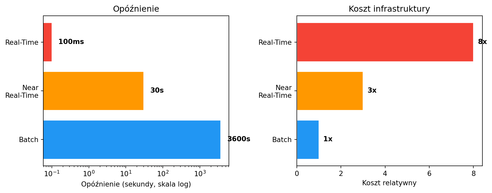

timeline
title Od plików płaskich do streamingu
1960s-70s : Pliki płaskie
: Bazy hierarchiczne
1970s-80s : Model relacyjny (OLTP)
: SQL, ACID, CRUD
1990s : Hurtownie danych (OLAP)
: ETL, kostki, raporty
2000s : Big Data
: Hadoop, MapReduce
2010s : Data Lake
: Schema-on-read, S3/HDFS
2020s : Streaming + Lakehouse
: Kafka, Spark, Flink
Wykład 1 — Od plików płaskich do Data Lake
Czas trwania: 1,5h
Cel wykładu: Zrozumienie, jak ewoluowały modele przetwarzania danych — od prostych plików, przez bazy relacyjne i hurtownie danych, aż po Data Lake i przetwarzanie strumieniowe. Wprowadzenie pojęcia analizy danych w czasie rzeczywistym.
Po co nam analiza danych w czasie rzeczywistym?
Wyobraź sobie, że prowadzisz sklep internetowy. Na koniec miesiąca generujesz raport sprzedaży — dowiadujesz się, że dwa tygodnie temu kampania reklamowa przestała działać. Straciłeś dwa tygodnie budżetu.
A teraz wyobraź sobie, że widzisz to w ciągu minuty od momentu, gdy współczynnik konwersji spada. Reagujesz natychmiast — wyłączasz kampanię, zmieniasz kreację, ratujesz budżet.
To jest różnica między przetwarzaniem wsadowym (batch) a analizą w czasie rzeczywistym (real-time analytics).
Analiza danych w czasie rzeczywistym to proces przetwarzania danych natychmiast (lub niemal natychmiast) po ich wygenerowaniu — bez czekania na zgromadzenie ich w pliku czy hurtowni.
Gdzie to ma znaczenie?
| Branża | Przykład | Czas reakcji |
|---|---|---|
| Bankowość | Blokowanie podejrzanej transakcji kartą | Milisekundy |
| E-commerce | Personalizacja oferty w trakcie sesji | Sekundy |
| Logistyka | Przekierowanie przesyłki po wykryciu opóźnienia | Minuty |
| Telekomunikacja | Wykrycie awarii sieci przed zgłoszeniem klienta | Sekundy |
| Ochrona zdrowia | Alert z monitora pacjenta na OIOM | Milisekundy |
Nie zawsze potrzebujesz reakcji w milisekundach. Kluczowe pytanie brzmi: jaki czas reakcji wymaga Twój problem biznesowy?
Ewolucja modeli przetwarzania danych
Pliki płaskie — punkt wyjścia
Zanim pojawiły się bazy danych, informacje przechowywano w plikach tekstowych — CSV, TSV, plikach o stałej szerokości kolumn. Każdy program czytał plik od początku do końca, przetwarzał dane i zapisywał wynik do nowego pliku.
Code
import pandas as pd
import numpy as np
np.random.seed(42)
transactions = pd.DataFrame({
'data': pd.date_range('2026-01-01', periods=100, freq='h'),
'kwota': np.random.uniform(10, 5000, 100).round(2),
'sklep': np.random.choice(['Warszawa', 'Kraków', 'Gdańsk'], 100)
})
# Typowa analiza wsadowa: wczytaj → przetwórz → zapisz
monthly = transactions.groupby('sklep')['kwota'].agg(['sum', 'mean', 'count'])
monthly.columns = ['suma', 'średnia', 'liczba']
print(monthly.round(2)) suma średnia liczba
sklep
Gdańsk 76467.87 2317.21 33
Kraków 70304.46 2267.89 31
Warszawa 88847.85 2468.00 36To podejście działa dobrze dla niewielkich danych. Problem pojawia się, gdy dane rosną, wielu użytkowników chce jednocześnie z nich korzystać albo potrzebujemy spójności i bezpieczeństwa.
Model OLTP — bazy relacyjne
W latach 70. Edgar Codd zaproponował model relacyjny, który stał się fundamentem systemów transakcyjnych. OLTP (On-Line Transaction Processing) to model zoptymalizowany pod szybki zapis i odczyt pojedynczych rekordów.
Cechy OLTP: operacje CRUD, gwarancje ACID, krótkie transakcje. Stosowany w systemach ERP, CRM, bankowości, e-commerce.
Code
import sqlite3
conn = sqlite3.connect(':memory:')
cursor = conn.cursor()
cursor.execute('''
CREATE TABLE transakcje (
id INTEGER PRIMARY KEY, data TEXT, kwota REAL, sklep TEXT
)
''')
cursor.execute(
"INSERT INTO transakcje (data, kwota, sklep) VALUES (?, ?, ?)",
('2026-03-12 10:30:00', 299.99, 'Warszawa')
)
cursor.execute("SELECT * FROM transakcje WHERE id = 1")
print(cursor.fetchone())
conn.close()(1, '2026-03-12 10:30:00', 299.99, 'Warszawa')OLTP świetnie obsługuje bieżące operacje. Ale pytanie „Jaka była łączna sprzedaż wg regionów w ostatnich 12 miesiącach?“ na bazie produkcyjnej może zablokować system.
Model OLAP — hurtownie danych
Potrzeba analityki doprowadziła do powstania OLAP (On-Line Analytical Processing) i hurtowni danych. Dane z wielu systemów OLTP ładowane są w procesie ETL (Extract–Transform–Load), gdzie można je analizować bez wpływu na systemy produkcyjne.
Cechy OLAP: agregacje wielowymiarowe (czas, miejsce, produkt), dane historyczne, raporty i dashboardy.
Code
np.random.seed(42)
sprzedaz = pd.DataFrame({
'data': pd.date_range('2025-01-01', periods=365, freq='D'),
'kwota': np.random.uniform(1000, 50000, 365).round(2),
'region': np.random.choice(['Mazowieckie', 'Małopolskie', 'Pomorskie'], 365),
'kategoria': np.random.choice(['Elektronika', 'Odzież', 'Żywność'], 365)
})
sprzedaz['kwartal'] = sprzedaz['data'].dt.to_period('Q')
pivot = sprzedaz.pivot_table(values='kwota', index='region', columns='kwartal', aggfunc='sum')
print("Sprzedaż wg regionów i kwartałów (tys. PLN):")
print((pivot / 1000).round(1))Sprzedaż wg regionów i kwartałów (tys. PLN):
kwartal 2025Q1 2025Q2 2025Q3 2025Q4
region
Mazowieckie 940.2 823.1 1098.7 615.1
Małopolskie 547.4 710.7 824.7 834.7
Pomorskie 685.6 654.7 646.8 774.6Data Lake — wszystko w jednym miejscu
Hurtownia wymaga, by dane miały strukturę przed załadowaniem (schema-on-write). To nie radzi sobie z logami, obrazami, plikami JSON z API, danymi IoT.
Data Lake to podejście odwrotne — przechowujemy surowe dane w dowolnym formacie (schema-on-read) i nadajemy im strukturę dopiero podczas analizy.
| Cecha | Hurtownia danych | Data Lake |
|---|---|---|
| Struktura danych | Ustrukturyzowane | Dowolne (surowe) |
| Schemat | Przed załadowaniem | Przy odczycie |
| Użytkownicy | Analitycy biznesowi | Data scientists, inżynierowie |
| Koszt przechowywania | Wysoki | Niski |
| Technologie | SQL Server, Oracle, Teradata | Hadoop HDFS, S3, Azure Data Lake |
Dane zawsze powstają jako strumień
Wszystkie powyższe modele zakładają, że dane są w spoczynku — leżą w pliku, bazie, hurtowni. Ale w rzeczywistości dane zawsze powstają jako strumień zdarzeń — każda transakcja, każde kliknięcie, każdy odczyt sensora to zdarzenie, które pojawia się w określonym momencie czasu.
Przetwarzanie wsadowe to tylko uproszczenie — zbieramy strumień zdarzeń do pliku i analizujemy go z opóźnieniem.
Code
import time
from datetime import datetime
def generuj_transakcje(n=5):
sklepy = ['Warszawa', 'Kraków', 'Gdańsk']
for i in range(n):
yield {
'id': f'TX{i+1:04d}',
'czas': datetime.now().strftime('%H:%M:%S'),
'kwota': round(np.random.uniform(10, 2000), 2),
'sklep': np.random.choice(sklepy)
}
time.sleep(0.3)
suma = 0
for tx in generuj_transakcje():
suma += tx['kwota']
alert = " << DUŻA TRANSAKCJA" if tx['kwota'] > 1500 else ""
print(f"[{tx['czas']}] {tx['id']}: {tx['kwota']:>8.2f} PLN ({tx['sklep']}){alert}")
print(f"\nSuma przetworzona na bieżąco: {suma:.2f} PLN")[00:08:49] TX0001: 1001.75 PLN (Kraków)
[00:08:49] TX0002: 77.42 PLN (Warszawa)
[00:08:50] TX0003: 731.16 PLN (Gdańsk)
[00:08:50] TX0004: 562.40 PLN (Kraków)
[00:08:50] TX0005: 36.06 PLN (Warszawa)
Suma przetworzona na bieżąco: 2408.79 PLNSystemy obsługujące strumienie danych to m.in. systemy transakcyjne, hurtownie danych, systemy IoT, systemy analityki webowej, platformy reklamowe, media społecznościowe, systemy logowania.
Firma to organizacja, która generuje i odpowiada na ciągły strumień zdarzeń.
Trzy tryby przetwarzania — porównanie
| Cecha | Batch | Near Real-Time | Real-Time |
|---|---|---|---|
| Opóźnienie | Minuty–godziny–dni | Sekundy–minuty | Milisekundy–sekundy |
| Przykład | Raport miesięczny | Dashboard sprzedaży (30s) | Blokowanie karty |
| Koszt | Niski | Średni | Wysoki |
| Technologie | Pandas, Spark (batch), SQL | Kafka + Spark Streaming | Apache Flink, custom |
Nie zawsze potrzebujesz pełnego real-time. W wielu przypadkach near real-time jest wystarczające i znacznie tańsze.
Code
import matplotlib.pyplot as plt
import numpy as np
modes = ['Batch', 'Near\nReal-Time', 'Real-Time']
latency = [3600, 30, 0.1] # seconds
cost = [1, 3, 8] # relative
fig, (ax1, ax2) = plt.subplots(1, 2, figsize=(10, 4))
colors = ['#2196F3', '#FF9800', '#F44336']
ax1.barh(modes, latency, color=colors, edgecolor='white')
ax1.set_xscale('log')
ax1.set_xlabel('Opóźnienie (sekundy, skala log)')
ax1.set_title('Opóźnienie')
for i, v in enumerate(latency):
label = f"{v}s" if v >= 1 else f"{int(v*1000)}ms"
ax1.text(v * 1.5, i, label, va='center', fontweight='bold')
ax2.barh(modes, cost, color=colors, edgecolor='white')
ax2.set_xlabel('Koszt relatywny')
ax2.set_title('Koszt infrastruktury')
for i, v in enumerate(cost):
ax2.text(v + 0.2, i, f'{v}x', va='center', fontweight='bold')
plt.tight_layout()
plt.show()
Typy danych — krótki przegląd
Ustrukturyzowane — tabele SQL, pliki CSV z ustaloną strukturą kolumn. Fundament systemów transakcyjnych.
Półustrukturyzowane — JSON, XML. Elastyczny schemat, dominują w API i systemach NoSQL.
Code
import json
zamowienie = {
"id": "ORD-2026-0042",
"klient": {"imie": "Anna", "miasto": "Warszawa"},
"produkty": [
{"nazwa": "Laptop", "cena": 4299.00},
{"nazwa": "Myszka", "cena": 89.99}
],
"status": "wysłane"
}
print(json.dumps(zamowienie, indent=2, ensure_ascii=False)){
"id": "ORD-2026-0042",
"klient": {
"imie": "Anna",
"miasto": "Warszawa"
},
"produkty": [
{
"nazwa": "Laptop",
"cena": 4299.0
},
{
"nazwa": "Myszka",
"cena": 89.99
}
],
"status": "wysłane"
}Nieustrukturyzowane — tekst (e-maile, opinie), obrazy, dźwięk, wideo. Wymagają NLP, computer vision, deep learning.
Strumieniowe — zdarzenia generowane w sposób ciągły. To z nimi będziemy pracować przez resztę kursu.
Big Data — pięć wymiarów (5V)
- Volume — rozmiar (terabajty, petabajty),
- Velocity — tempo napływu danych,
- Variety — różnorodność formatów i źródeł,
- Veracity — wiarygodność i jakość danych,
- Value — wartość biznesowa ukryta w danych.
Hurtownia danych nie jest systemem Big Data. Hurtownia przechowuje dane ustrukturyzowane i służy do raportowania (100% accuracy). System Big Data obsługuje dane o dowolnej strukturze i toleruje pewien poziom niedokładności.
Podsumowanie
Na tym wykładzie prześledziliśmy ewolucję od plików płaskich, przez OLTP, OLAP i Data Lake, aż po przetwarzanie strumieniowe. Każdy model odpowiada na inne potrzeby biznesowe — i żaden nie zastępuje poprzedniego. W praktyce firmy używają ich równolegle.
Na następnym wykładzie: architektury łączące batch i streaming — Lambda i Kappa — oraz kluczowe pojęcia: czas zdarzenia, czas przetwarzania, okna czasowe.
Do przemyślenia: W jakim trybie Twoja firma (lub firma, w której chciałbyś pracować) przetwarza dane? Czy istnieją procesy, które skorzystałyby na przejściu do trybu strumieniowego?